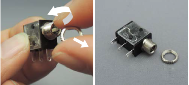
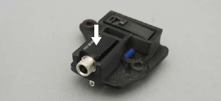
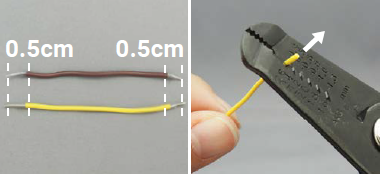
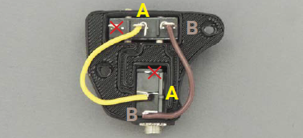
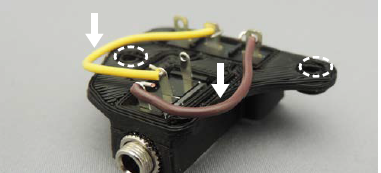

Assemble Electronics
Step 1: Position limit switch
Insert the limit switch into the MMC60 Switch Mount as shown.

Step 2: Insert pins
Insert the MMC60 Button Pins through the switch mount and limit switch, as shown.

Step 3: Remove nut from jack
If the nut is attached to the mono jack, remove it. Place the nut somewhere you will not lose track of it or where it cannot roll away.

Step 4: Position jack
Place the mono jack in the switch mount, as shown.

Step 5: Secure jack
Tighten the nut onto the mono jack to secure it to the switch mount. You may need to use pliers to tighten it sufficiently.

Step 6: Cut and strip wires
- Use the wire strippers to cut two, 6 cm lengths of 22 AWG wire.

- Use the wire strippers to strip 0.5 cm off both ends of each wire.

Step 7: Connect wires
- Connect the A terminals together with one wire and bend in place. Connect the B terminals with the second wire and bend in place.

- Flatten the wires so they're flush against the switch mount. Do not obstruct the two holes.
